컴퓨터응용선반기능사 (2012-04-08 기출문제)
1과목: 기계재료 및 요소
1. 불스 아이(bull's eye) 조직은 어느 주철에 나타나는가?
- 가단주철
- 미하나이트주철
- 칠드주철
- 구상흑연주철
(정답률: 47%)

2. 다음 중 청동의 주성분 구성은?
- Cu-Zn 합금
- Cu-Pb 합금
- Cu-Sn 합금
- Cu-Ni 합금
(정답률: 69%)
3. 자기 감응도가 크고, 잔류자기 및 항자력이 작아 변압기 철심이나 교류기계의 철심 등에 쓰이는 강은?
- 자석강
- 규소강
- 고 니켈강
- 고 크롬강
(정답률: 54%)
4. 황(S)이 함유된 탄소강의 적열취성을 감소시키기 위해 첨가하는 원소는?
- 망간
- 규소
- 구리
- 인
(정답률: 58%)
5. 다음 중 황동에 납(Pb)을 첨가한 합금은?
- 델타메탈
- 쾌삭황동
- 문쯔메탈
- 고강도 황동
(정답률: 53%)
6. 스프링강의 특성에 대한 설명으로 틀린 것은?
- 항복강도와 크리프 저항이 커야 한다.
- 반복하중에 잘 견딜수 있는 성질이 요구된다.
- 냉간가공 방법으로만 제조된다.
- 일반적으로 열처리를 하여 사용한다.
(정답률: 72%)
7. 다음 중 내식용 알루미늄 합금이 아닌 것은?
- 알민
- 알드레이
- 하이드로날륨
- 라우탈
(정답률: 59%)
8. 다음 나사 중 먼지, 모래 등이 들어가기 쉬운 곳에 사용되는 것은?
- 둥근 나사
- 사다리꼴 나사
- 톱니 나사
- 볼 나사
(정답률: 57%)
9. 가위로 물체를 자르거나 전단기로 철판을 전단할 때 생기는 가장 큰 응력은?
- 인장 응력
- 압축 응력
- 전단 응력
- 집중 응력
(정답률: 83%)
10. 다음 중 나사의 피치가 일정할 때 리드가 가장 큰 것은?
- 4줄 나사
- 3줄 나사
- 2줄 나사
- 1줄 나사
(정답률: 82%)
11. 다음 중 마찰차를 활용하기에 적합하지 않은 것은?
- 속도비가 중요하지 않을 때
- 전달할 힘이 클 때
- 회전속도가 클 때
- 두 축 사이를 단속할 필요가 있을 때
(정답률: 37%)
12. 베어링의 호칭번호가 608일 때, 이 베어링의안지름음 몇 mm 인가?
- 8
- 12
- 15
- 40
(정답률: 50%)
13. 기계 부분의 운동 에너지를 열에너지나 전기에너지 등으로 바꾸어 흡수함으로써 운동 속도를 감소시키거나 정지시키는 장치는?
- 브레이크
- 커플링
- 캠
- 마찰차
(정답률: 84%)
14. 코터이음에서 코터의 너비가 10mm, 평균 높이가 50mm인 코터의 허용전단응력이 20N/㎟일 때, 이 코터이음에 가할 수 있는 최대 하중(kN)은?
- 10
- 20
- 100
- 200
(정답률: 28%)
15. 표준스퍼기어의 잇수가 40개, 모듈이 3인 소재의 바깥 지름(mm)은?
- 120
- 126
- 184
- 204
(정답률: 37%)
2과목: 기계제도(절삭부분)
16. 그림과 같은 정면도와 우측면도에 가장 적합한 평면도는?
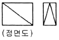
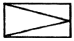
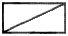
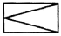
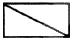
(정답률: 56%)
17. 스프링의 도시방법에 관한 설명으로 틀린 것은?
- 그림에 기입하기 힘든 사항은 요목표에 일괄하여 표시 한다.
- 조립도, 설명도 등에서 코일 스프링을 도시하는 경우에는 그 단면만을 나타내어도 좋다.
- 요목표에 단서가 없는 코일 스프링 및 벌류트 스프링은 모두 오른쪽 감는 것을 나타낸다.
- 코일 스프링, 벌류트 스프링 및 접시 스프링은 일반적으로 무하중 상태에서 그리며, 겹판 스프링 역시 일반적으로 무하중 상태(스프링 판이 휘어진 상태)에서 그린다.
(정답률: 49%)
18. 다음 그림에서 A~D에 관한 설명으로 가장 타당한 것은?
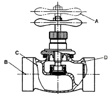
- 선 A는 물체의 이동 한계의 위치를 나타낸다.
- 선 B는 도형의 숨은 부분을 나타낸다.
- 선 C는 대상의 앞쪽 형상을 가상으로 나타낸다.
- 선 D는 대상이 평면임을 나타낸다.
(정답률: 63%)
19. ISO 규격에 있는 미터 사다리꼴 나사의 표시 기호는?
- M
- Tr
- UNC
- R
(정답률: 66%)
20. 기어의 도시 방법에 관한 설명으로 틀린 것은?
- 잇봉우리원은 굵은 실선으로 표시한다.
- 피치원은 가는 1점 쇄선으로 표시한다.
- 이골원은 가는 실선으로 표시한다.
- 잇줄 방향은 통상 3개의 굵은 실선으로 표시한다.
(정답률: 51%)
21. 구멍의 치수가
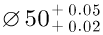
이고 축의 치수가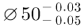
인 경우의 끼워 맞춤은?- 헐거운 끼워맞춤
- 중간 끼워맞춤
- 억지 끼워맞춤
- 고정 끼워맞춤
(정답률: 58%)
22. 최대 실체 공차 방식에서 외측 형체에 대한 실효치수의 식으로 옳은 것은?
- 최대 실체 치수 - 기하공차
- 최대 실체 치수 + 기하공차
- 최소 실체 치수 - 기하공차
- 최소 실체 치수 + 기하공차
(정답률: 46%)
23. 모떼기의 각도가 45°일 때의 치수 기입 방법으로 틀린 것은?
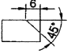
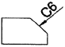
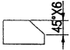
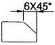
(정답률: 49%)
24. 그림과 같이 나타낸 단면도의 명칭으로 옳은 것은?
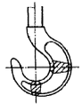
- 한쪽 단면도
- 부분 단면도
- 회전도시 단면도
- 조합에 의한 단면도
(정답률: 72%)
25. 가공에 의한 커터의 줄무늬가 기호를 기입한 면의 중심에 대하여 거의 방사 모양으로 표시하는 것은?
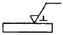
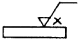
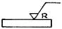
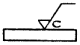
(정답률: 53%)
26. 연삭 가공을 할 때 숫돌에 눈메움, 무딤 등이 발생하여 절삭상태가 나빠진다. 이때 예리한 절삭날을 숫돌 표면에 생성하여 잘석성을 회복시키는 작업은?
- 드레싱
- 리밍
- 보링
- 호빙
(정답률: 74%)
27. 탄화 텅스텐(WC), 티탄(Ti), 탄탈(Ta) 등의 탄화물 분말을 코발드(Co), 니켈(Ni) 분말과 혼합하여 고온에서 소결하여 만든 절삭 공구는?
- 고속도강
- 주조 합금
- 세라믹
- 초경 합금
(정답률: 53%)
28. 정면 밀링 커터와 엔드밀을 사용하여 평면 가공, 홈 가공등을 하는 작업에 가장 적합한 밀링 머신은?
- 공구 밀링 머신
- 특수 밀링 머신
- 수직 밀링 머신
- 모방 밀링 머신
(정답률: 64%)
29. 선반 가공에서 가공면의 표면 거칠기를 양호하게 하는 방법은?
- 바이트 노즈 반지름은 크게, 이송은 작게 한다.
- 바이트 노즈 반지름은 작게, 이송은 크게 한다.
- 바이트 노즈 반지름은 작게, 이송은 작게 한다.
- 바이트 노즈 반지름은 크게, 이송은 크게 한다.
(정답률: 39%)
30. 선반의 주축에 주로 사용되는 테이퍼의 종류는?
- 모스 테이퍼
- 내셔널 테이퍼
- 자르노 테이퍼
- 브라운 엔드 샤프 테이퍼
(정답률: 71%)
3과목: 기계공작법
31. 엔드밀에 대한 설명 중 맞는 것은?
- 일반적으로 넓은 면, T 홈을 가공할 때 사용한다.
- 지름이 작은 경우에는 날과 자루가 분리된 것을 사용한다.
- 거친 절삭에는 볼 엔드밀, R 가공에는 라프 엔드밀을 사용한다.
- 엔드밀의 재질은 주로 고속도강이나 초경합금을 사용한다.
(정답률: 52%)
32. 밀링의 상향 절삭으로 맞는 것은?
- 커터의 회전방향과 공작물의 이송방향이 같다.
- 커터의 회전방향과 공작물의 이송방향이 직각이다.
- 커터의 회전방향과 공작물의 이송방향이 45°이다.
- 커터의 회전방향과 공작물의 이송방향이 반대이다.
(정답률: 60%)
33. 절삭공구를 전후 좌우로 이송하여 절삭깊이와 이송을 주고 공작물을 회전시키면서 절삭하는 공작 기계는?
- 셰이퍼
- 드릴링 머신
- 밀링 머신
- 선반
(정답률: 72%)
34. 선반의 가로 이송대 리드가 4mm이고, 핸들 둘레에 200 등분한 눈금이 매겨져 있을 때 직경 40mm의 공작물을 직경 36mm로 가공하려면 핸들의 몇 눈금을 돌리면 되는가?
- 50눈금
- 100눈금
- 150눈금
- 200눈금
(정답률: 39%)
35. 점성이 큰 재질을 작은 경사각의 공구로 절삭할 때 절삭 깊이가 클 때 생기기 쉬운 그림과 같은 칩의 형태는?
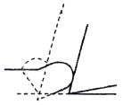
- 유동형 칩
- 전단형 칩
- 경작형 칩
- 균일형 칩
(정답률: 43%)
36. 드릴로 뚫은 구멍의 내면을 매끈하고 정밀하게 하는 가공은?
- 전자 빔 가공
- 래핑
- 쇼 피닝
- 리밍
(정답률: 60%)
37. 측정기로 가공물을 측정할 때 발생할 수 있는 측정 오차가 아닌 것은?
- 측정기의 오차
- 시차
- 우연 오차
- 편차
(정답률: 41%)
38. 다음 각각의 게이지와 그 용도에 대한 설명이 틀린 것은?
- 와이어게이지는 와이어의 길이를 측정하는 것이다.
- 센터게이지는 나사절삭시 나사바이트의 각도를 측정하는 것이다.
- 드릴게이지는 드릴의 지름을 측정하는 것이다.
- R게이지는 원호 등의 반지름을 측정하는 것이다.
(정답률: 32%)
39. "규산 나트륨(물유리)을 입자와 혼합, 성형하여 제작한 숫돌로 대형 숫돌에 적합하고, 고속도강과 같이 연삭할 때 균열이 발생하기 쉬운 가공물의 연삭이나 연삭할 때 발열이 적어야 하는 경우에 적합하다." 다음 설명을 만족하는 결합제는?
- 비트리파이드 결합제
- 실리케이트 결합제
- 셸락 결합제
- 고무 결합제
(정답률: 49%)
40. 수용성 절삭유제의 특성 및 설명으로 옳은 것은?
- 점성이 낮고 비열이 커서 냉각효과가 크다.
- 윤활성과 냉각성이 떨어져 잘 사용되지 않고 있다.
- 윤활성이 좋으나 냉각성이 적어 경절삭용으로 사용한다.
- 광유에 비눗물을 첨가하여 사용하며 비교적 냉각효과가 크다.
(정답률: 49%)
4과목: CNC공작법 및 안전관리
41. 센터리스 연삭기의 특징에 대한 설명으로 틀린 것은?
- 긴 홈이 있는 공작물도 연삭이 가능하다.
- 속이 빈 원통을 연삭할 때 적합하다.
- 연삭 여유가 작아도 된다.
- 대량 생산에 적합하다.
(정답률: 34%)
42. 공작물의 가공액이 담긴 탱크 속에 넣고, 가공할 모양과 같게 만든 전극을 접근시켜 아크(Arc)발생으로 형상을 가공하는 것은?
- 방전 가공
- 초음파 가공
- 레이저 가공
- 화학적 가공
(정답률: 63%)
43. CNC공작기계가 작동 중 이상이 생겼을 경우의 응급처치 사항으로 잘못된 것은?
- 비상스위치를 누르고 작업을 중지한다.
- 강전반내의 회로도를 조작하여 점검한다.
- 경고등이 점등되었는지 확인한다.
- 작업을 멈추고 이상 부위를 확인한다.
(정답률: 78%)
44. CNC 선반의 홈 가공 프로그램에서 회전하는 주축에 홈 바이트를 2회전 일시정지 하고자 한다. [ ]에 맞는 것은?
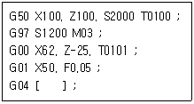
- P1200
- P100
- P60
- P600
(정답률: 37%)
45. 다음 CNC 선반 도면에서 P점에서 원호 R3를 가공하는 프로그램으로 맞는 것은?(오류 신고가 접수된 문제입니다. 반드시 정답과 해설을 확인하시기 바랍니다.)
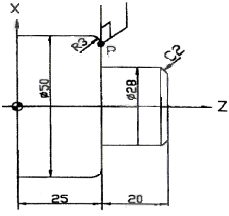
- G02 X44. Z25. R3. F0.2 ;
- G03 X50. Z25. R3. F0.2 ;
- G02 X47. Z22. R3. F0.2 ;
- G03 X50. Z22. R3. F0.2 ;
(정답률: 41%)
46. CNC 공작기계의 제어 방식이 아닌것은?
- 시스템 제어
- 위치결정 제어
- 직선절삭 제어
- 윤곽절삭 제어
(정답률: 48%)
47. 머시닝센터 가공에서 사용되는 공구의 길이 보정을 취소하는 워드는?
- G40
- G43
- G44
- G49
(정답률: 55%)
48. 다음 중 기계 좌표계에 대한 설명으로 틀린 것은?
- 기계원점을 기준으로 정한 좌표계이다.
- 공작물 좌표계 및 각종 파라미터 설정값의 기준이 된다.
- 금지영역 설정의 기준이 된다.
- 기계원점 복귀 준비기능은 G50 이다.
(정답률: 55%)
49. CNC 선반의 공구 날끝 보정에 관한 설명으로 틀린 것은?
- 날끝 R에 의한 가공 경로 오차량을 보상하는 기능이다.
- G40 명령은 공구 날끝 보정 취소 기능이다.
- G41과 G42 명령은 모달 명령이다.
- 공구 날끝 보정은 가공이 시작된 다음 이루어져야 한다.
(정답률: 52%)
50. 기계의 일상 점검 내용중에서 매일 점검하지 않아도 되는 사항은?
- 절삭유의 유량이 충분한지 여부
- 각 축이 원활하게 움직이는지 여부
- 주축의 회전이 올바르게 되는지 여부
- 기계의 정밀도를 검사하여 정확한지 여부
(정답률: 71%)
51. 다음 프로그램에서 공작물의 지름이 ø60mm일 때, 주축의 회전수는 얼마인가?
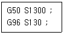
- 147rpm
- 345rpm
- 690rpm
- 1470rpm
(정답률: 60%)
52. CNC공작기계의 프로그램에서 기능 설명으로 잘못된 것은?
- T 기능 - 공구기능
- M 기능 - 보조기능
- S 기능 - 이송기능
- G 기능 - 준비기능
(정답률: 67%)
53. 선반 작업시 안전사항으로 틀린 것은?
- 칩이나 절삭유의 비산을 방지하기 위해 플라스틱 덮개를 부착한다.
- 절삭가공을 할 때에는 보안경을 착용하여 눈를 보호한다.
- 절삭작업을 할 때에는 면장갑을 착용하고 작업한다.
- 척이 회전하는 동안에 일감이 튀어나오지 않도록 확실히 고정한다.
(정답률: 83%)
54. CNC선반의 안지름 및 바깥지름 막깍기의 사이클 프로그램에서 (경우1)의 "D(△d)", (경우2)의 "U(△d)"가 의미하는 것은?
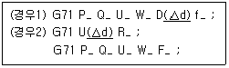
- 도피량
- 1회 절삭량
- X축 방향의 다듬질 여유
- 사이클 시작 블록의 전개번호
(정답률: 44%)
55. CAD/CAM 작업의 흐름을 바르게 나타낸 것은?
- 파트 프로그램 → 포스트 프로세싱 → CL 데이터 → DNC 가공
- 파트 프로그램 → CL 데이터 → 포스트 프로세싱 → DNC 가공
- 포스트 프로세싱 → CL 데이터 → 파트 프로그램 → DNC 가공
- 포스트 프로세싱 → 파트 프로그램 → CL 데이터 → DNC 가공
(정답률: 44%)
56. 다음 중 CNC 선반 프로그램에서 G04(휴지, Dwell)지령으로 틀린 것은?
- G04 X1.5;
- G04 S1.5;
- G04 U1.5;
- G04 P1500
(정답률: 63%)
57. 다음 CNC 프로그램에서 T⑤⑤의 의미는?
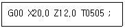
- 5번 공구의 날끝 반경이 0.5mm 임을 뜻한다.
- 5번 공구의 선택이 5번째임을 뜻한다.
- 5번 공구를 5번 선택한다는 뜻이다.
- 5번 공구 선택과 5번 공구의 보정번호를 뜻한다.
(정답률: 69%)
58. 머시닝센터 프로그램에서 XY 평면 지령을 위한 G코드는?
- G17
- G18
- G19
- G20
(정답률: 57%)
59. 일반적으로 NC 가공계획에 포함되지 않은 것은?
- 사용 기계 선정
- 가공순서 결정
- 자동프로그래밍
- 공구 선정
(정답률: 54%)
60. 복합형 고정 사이클에서 다음질 가공 사이클 G70을 사용할 수 없는 준비기능(G-코드)은?
- G71
- G72
- G73
- G76
(정답률: 53%)